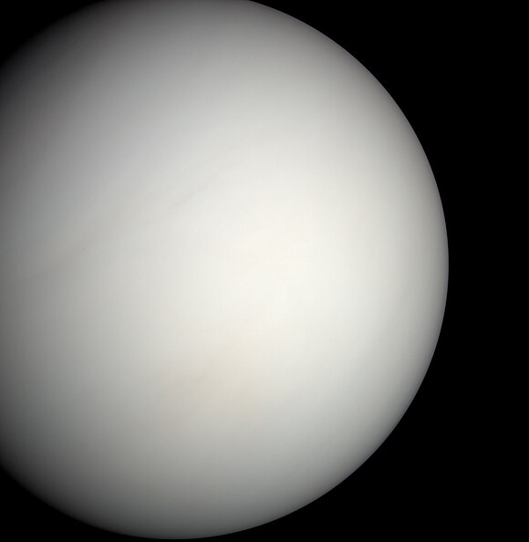
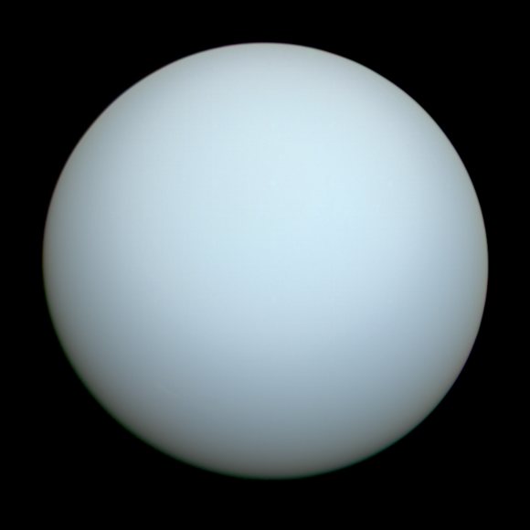
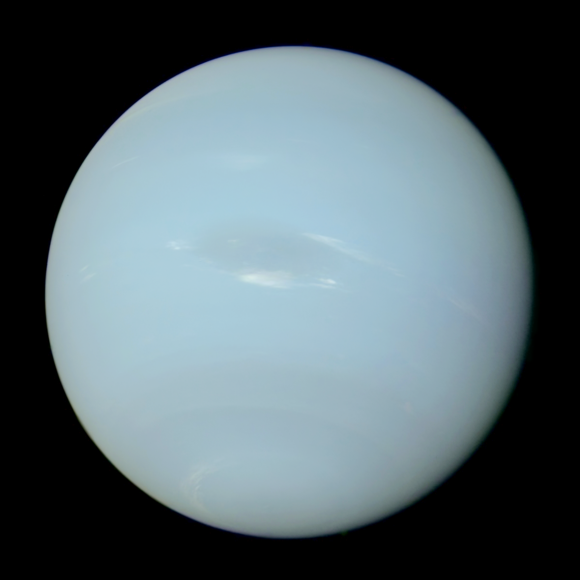

Mercury
Mercury is the first planet from the Sun and the smallest in the Solar System. In English, it is named after the ancient Roman god Mercurius (Mercury), god of commerce and communication, and the messenger of the gods. Mercury is classified as a terrestrial planet, with roughly the same surface gravity as Mars. The surface of Mercury is heavily cratered, as a result of countless impact events that have accumulated over billions of years. Its largest crater, Caloris Planitia, has a diameter of 1,550 km (960 mi) and one-third the diameter of the planet (4,880 km (3,030 mi)). Similarly to the Earth's Moon, Mercury's surface displays an expansive rupes system generated from thrust faults and bright ray systems formed by impact event remnants.

Venus
Venus is the second planet from the Sun. It is a terrestrial planet and is the closest in mass and size to its orbital neighbour Earth. It is named a Roman goddess, whose functions encompass love, beauty, victory. Venus is notable for having the densest atmosphere of the terrestrial planets, composed mostly of carbon dioxide with a thick, global sulfuric acid cloud cover. At the surface it has a mean temperature of 737 K (464 °C; 867 °F) and a pressure of 92 times that of Earth's at sea level. These extreme conditions compress carbon dioxide into a supercritical state close to Venus's surface.
Earth
Earth is the third planet from the Sun and the only astronomical object known to harbor life. This is enabled by Earth being an ocean world, the only one in the Solar System sustaining liquid surface water. Almost all of Earth's water is contained in its global ocean, covering 70.8% of Earth's crust. The remaining 29.2% of Earth's crust is land, most of which is located in the form of continental landmasses within Earth's land hemisphere. Most of Earth's land is somewhat humid and covered by vegetation, while large sheets of ice at Earth's polar deserts retain more water than Earth's groundwater, lakes, rivers and atmospheric water combined. Earth's crust consists of slowly moving tectonic plates, which interact to produce mountain ranges, volcanoes, and earthquakes. Earth has a liquid outer core that generates a magnetosphere capable of deflecting most of the destructive solar winds and cosmic radiation.
.jpg)
Mars
Mars is the fourth planet from the Sun. The surface of Mars is orange-red because it is covered in iron(III) oxide dust, giving it the nickname "the Red Planet". Mars is among the brightest objects in Earth's sky, and its high-contrast albedo features have made it a common subject for telescope viewing. It is classified as a terrestrial planet and is the second smallest of the Solar System's planets with a diameter of 6,779 km (4,212 mi). In terms of orbital motion, a Martian solar day (sol) is equal to 24.5 hours, and a Martian solar year is equal to 1.88 Earth years (687 Earth days). Mars has two natural satellites that are small and irregular in shape: Phobos and Deimos.

Jupiter
Jupiter is the fifth planet from the Sun and the largest in the Solar System. A gas giant, Jupiter's mass is more than two and a half times that of all the other planets in the Solar System combined and slightly less than one one-thousandth the mass of the Sun. Jupiter orbits the Sun at a distance of 5.20 AU (778.5 Gm) with an orbital period of 11.86 years. It is the third brightest natural object in the Earth's night sky after the Moon and Venus and has been observed since prehistoric times. Its name derives from Jupiter, the chief deity of ancient Roman religion. Jupiter forms a system of 95 known moons.

Saturn
Saturn is the sixth planet from the Sun and the second-largest in the Solar System, after Jupiter. It is a gas giant with an average radius of about nine-and-a-half times that of Earth. It has only one-eighth the average density of Earth, but is over 95 times more massive. Even though Saturn is nearly the size of Jupiter, Saturn has less than one-third of Jupiter's mass. Saturn orbits the Sun at a distance of 9.59 AU (1,434 million km) with an orbital period of 29.45 years. Saturn's interior is thought to be composed of a rocky core, surrounded by a deep layer of metallic hydrogen, an intermediate layer of liquid hydrogen and liquid helium, and finally, a gaseous outer layer. Saturn has a pale yellow hue due to ammonia crystals in its upper atmosphere.

Uranus
Uranus is the seventh planet from the Sun, the third-largest diameter and fourth-largest mass among the Solar System's planets. Uranus is a gaseous cyan-coloured ice giant. It is named the personification of the sky and one of the Greek primordial deities.Most of the planet is made of water, ammonia, and methane in a supercritical phase of matter, which astronomy calls "ice" or volatiles. The planet's atmosphere has a complex layered cloud structure and has the lowest minimum temperature (49 K (−224 °C; −371 °F)) of all the Solar System's planets. It has a marked axial tilt of 82.23° with a retrograde rotation period of 17 hours and 14 minutes. This means that in an 84-Earth-year orbital period around the Sun, its poles get around 42 years of continuous sunlight, followed by 42 years of continuous darkness.
Neptune
Neptune is the eighth and farthest known planet from the Sun. It is the fourth-largest planet in the Solar System by diameter, the third-most-massive planet, and the densest giant planet. It is 17 times the mass of Earth and slightly more massive, but denser and smaller, than fellow ice giant Uranus. Being composed primarily of gases and liquids, it has no well-defined solid surface, and orbits the Sun once every 164.8 years at an orbital distance of 30.1 astronomical units (4.5 billion kilometres; 2.8 billion miles). It is named after the Roman god of the sea and has the astronomical symbol, representing Neptune's trident.
